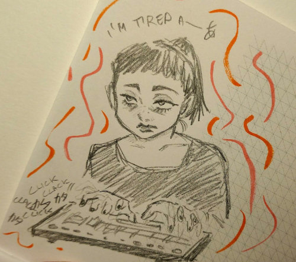

Coding is FUN, but also HARD
I'm tired _(:3 」∠)_
While I'm incredibly satisfied of what I'm doing with this little page
(especially since the last time I tried building a website it was more than 10 years ago and I never really got started in the first place),
I'm a little bit overwhelmed to be honest.
I want to do so much stuff!
Today I added 3 new pages: 2 are just dummy pages I plan to fill with information and lists (I love lists). I want to fill them immediately!!! AAAAH!
I want to work on all the "shrines" I have planned and add a lot more sketches here! I have already made a note with some topics I want to talk about in this blog, but I need time and energy to properly write them down.
I also have some art projects to prepare for. I plan to do something "elaborated" for October. But we'll see...
I'm busy, tired, but content. (>ω^)

I feel you, random coder I just doodled